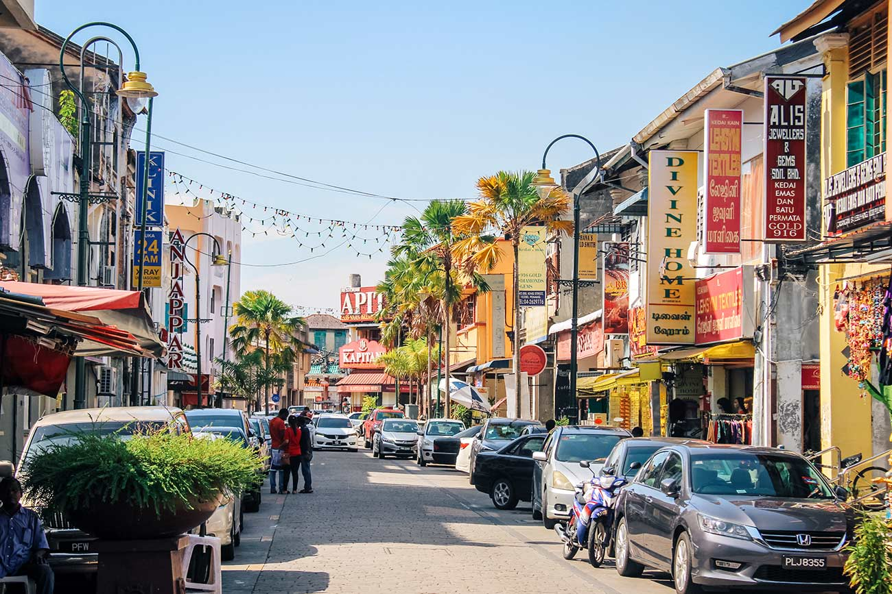
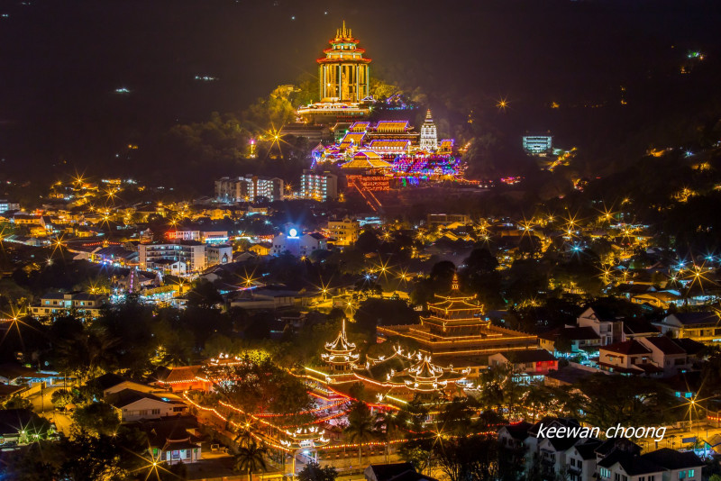

About Penang
Penang is a vibrant island state in Malaysia known for its rich cultural heritage, diverse cuisine, and stunning blend of modernity and tradition. It offers a unique blend of historical charm and contemporary attractions.
Penang is a vibrant island state in Malaysia known for its rich cultural heritage, diverse cuisine, and stunning blend of modernity and tradition. It offers a unique blend of historical charm and contemporary attractions.
Penang Food Street is famous for its incredible street food offerings. It’s a culinary haven where you can savor local delicacies like Char Kway Teow, Laksa, and Nasi Kandar, reflecting the island’s diverse and flavorful cuisine.

George Town, the capital of Penang, is a UNESCO World Heritage Site celebrated for its well-preserved colonial architecture, bustling street art, and rich cultural tapestry. It’s a lively area where traditional shophouses, historic temples, and vibrant street murals coexist.
Kek Lok Si Temple, Malaysia’s largest Buddhist temple, is a magnificent complex known for its grand architecture, beautiful gardens, and the impressive statue of the Goddess of Mercy. It’s a significant cultural and spiritual site, attracting visitors with its intricate design and serene ambiance.
Penang’s cultural highlights include its rich heritage reflected in George Town’s historic architecture and vibrant street art, the annual Penang International Festival celebrating local arts and traditions, and the diverse cultural practices of its communities, including the traditional Peranakan culture showcased in its museums and festivals.